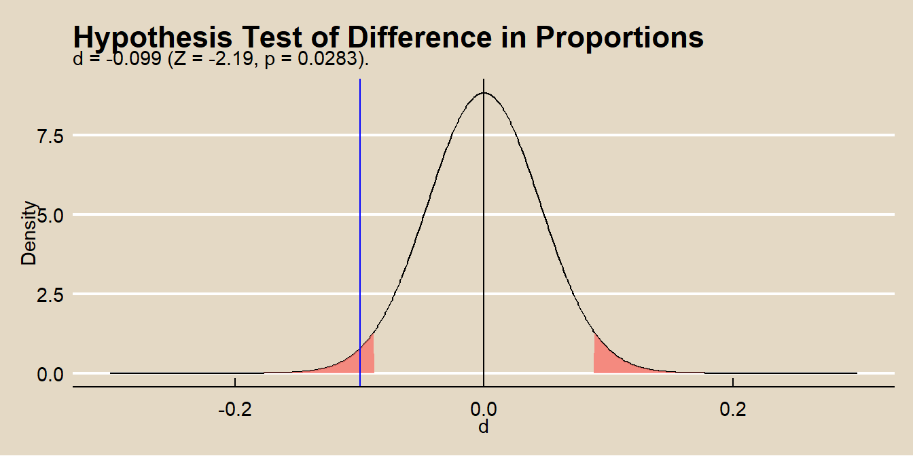
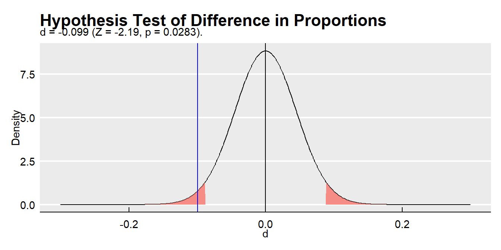

4.3 Two-Way Tables
These notes rely on PSU STATS 504 course notes.
A two-way frequency table is a frequency table for two categorical variables. You usually construct a two-way table to test whether the frequency counts in one categorical variable differ from the other categorical variable using the chi-square independence test. If there is a significant difference (i.e., the variables are related), then describe the relationship with an analysis of the residuals, calculations of measures of association (difference in proportions, relative risk, or odds ratio), and partition tests.
Here are three case studies that illustrate the concepts. The first is a simple 2x2 table. The second is a 3x2 table that extends some of the concepts. The third is a 2x4 table where one factor is ordinal.
Study 1: “Vitamin C” 2x2 Table. A double blind study investigated whether vitamin C prevents common colds on a sample of n = 279 persons. This study has two categorical variables each with two levels, a 2x2 two way table.
vitc_o <- matrix(
c(31, 17, 109, 122),
ncol = 2,
dimnames = list(
treat = c("Placebo", "VitaminC"),
resp = c("Cold", "NoCold")
)
)
vitc_o %>% data.frame() %>% rownames_to_column(var = " ") %>%
janitor::adorn_totals(where = c("row", "col"))## Cold NoCold Total
## Placebo 31 109 140
## VitaminC 17 122 139
## Total 48 231 279Study 2: “Smoking” 3x2 Table. An analysis classifies n = 5375 high school students by their smoking behavior and the smoking behavior of their parents.
smoke_o <- matrix(
c(400, 416, 188, 1380, 1823, 1168),
ncol = 2,
dimnames = list(
parents = c("Both", "One", "Neither"),
student = c("Smoker", "Non-smoker"))
)
smoke_o %>% data.frame() %>% rownames_to_column(var = " ") %>%
janitor::adorn_totals(where = c("row", "col"))## Smoker Non.smoker Total
## Both 400 1380 1780
## One 416 1823 2239
## Neither 188 1168 1356
## Total 1004 4371 5375Study 3: “CHD” Ordinal Table. A study of classified n = 1329 patients by cholesterol level and whether they had been diagnosed with coronary heart disease (CHD).
# tribble() is a little easier.
chd_o <- tribble(
~L_0_199, ~L_200_219, ~L_220_259, ~L_260p,
12, 8, 31, 41,
307, 246, 439, 245
) %>% as.matrix()
rownames(chd_o) <- c("CHD", "No CHD")
chd_o %>% data.frame() %>% rownames_to_column(var = " ") %>%
janitor::adorn_totals(where = c("row", "col"))## L_0_199 L_200_219 L_220_259 L_260p Total
## CHD 12 8 31 41 92
## No CHD 307 246 439 245 1237
## Total 319 254 470 286 13294.3.1 Chi-Square Independence Test
The chi-square independence test tests whether observed joint frequency counts \(O_{ij}\) differ from expected frequency counts \(E_{ij}\) under the independence model (the model of independent explanatory variables, \(\pi_{ij} = \pi_{i+} \pi_{+j}\). \(H_0\) is \(O_{ij} = E_{ij}\).
There are two possible test statistics for this test, Pearson \(X^2\) (and the continuity adjusted \(X^2\)), and deviance \(G^2\). As \(n \rightarrow \infty\) their sampling distributions approach \(\chi_{df}^2\) with degrees of freedom (df) equal to the saturated model df \(I \times J - 1\) minus the independence model df \((I - 1) + (J - 1)\), which you can algebraically solve for \(df = (I - 1)(J - 1)\).
The Pearson goodness-of-fit statistic is
\[X^2 = \sum \frac{(O_{ij} - E_{ij})^2}{E_{ij}}\]
where \(O_{ij}\) is the observed count, and \(E_{ij}\) is the product of the row and column marginal probabilities. For the Vitamin C study, \(X^2\) is
vitc_e <- sum(vitc_o) * prop.table(vitc_o, 1) * prop.table(vitc_o, 2)
X2 <- sum((vitc_o - vitc_e)^2 / vitc_e)
print(X2)## [1] 4.8and the deviance statistic is
\[G^2 = 2 \sum_{ij} O_{ij} \log \left( \frac{O_{ij}}{E_{ij}} \right)\]
## [1] 4.9\(X^2\) and \(G^2\) increase with the disagreement between the saturated model proportions \(p_{ij}\) and the independence model proportions \(\pi_{ij}\).
The degrees of freedom is
## [1] 1The associated p-values are
## [1] 0.027## [1] 0.028The chisq.test() function applies the Yates continuity correcton by default to correct for situations with small cell counts. The Yates continuity correction subtracts 0.5 from the \(O_{ij} - E_{ij}\) differences. Set correct = FALSE to suppress Yates.
##
## Pearson's Chi-squared test
##
## data: vitc_o
## X-squared = 5, df = 1, p-value = 0.03The Yates correction yields more conservative p-values.
##
## Pearson's Chi-squared test with Yates' continuity correction
##
## data: vitc_o
## X-squared = 4, df = 1, p-value = 0.04These p-values are evidence for rejecting the independence model.
Here is the chi-square test applied to the CHD data. Recall this data set is 4x2, so the degrees of freedom are \((4-1)(2-1) = 3\). The Yates continuity correction does not apply to data other than 2x2, so the correct = c(TRUE, FALSE) has no effect in chisq.test().
##
## Pearson's Chi-squared test
##
## data: chd_o
## X-squared = 35, df = 3, p-value = 0.0000001The p-value is very low, so reject the null hypothesis of independence. This demonstrates that a relationship exists between cholesterol and CHD. Now you should describe that relationship by evaluating the (i) residuals, (ii) measures of association, and (iii) partitioning chi-square.
4.3.2 Residuals Analysis
If the chi-squared independence test rejects \(H_0\) of identical frequency distributions, the next step is to identify which cells may be driving the lack of fit. The Pearson residuals in the two-way table are
\[r_{ij} = \frac{O_{ij} - E_{ij}}{\sqrt{E_{ij}}}\]
where \(X^2 = \sum{r_{ij}}\). The \(r_{ij}\) values have a normal distribution with mean 0, but with unequal variances. The standardized Pearson residual for a two-way table is
\[r_{ij} = \frac{O_{ij} - E_{ij}}{\sqrt{E_{ij}(1 - p_{i+})(1 - p_{+j})}}\]
and the \(r_{ij}\) values do have a \(\sim N(0, 1)\) distribution. \(r_{ij}^2 > 4\) is a sign of lack of fit. The chissq.test() object includes residuals that match the manual calculation.
## resp
## treat Cold NoCold
## Placebo -1.4 0.64
## VitaminC 1.4 -0.64## resp
## treat Cold NoCold
## Placebo 1.4 -0.64
## VitaminC -1.4 0.64It also includes stdres that match the manual standardized calculation. (well, no it doesn’t, but I don’t know what my mistake is.)
(vitc_e - vitc_o) /
sqrt(vitc_e * (1 - prop.table(vitc_o, margin = 1))
* (1 - prop.table(vitc_o, margin = 2))
)## resp
## treat Cold NoCold
## Placebo 2.7 -1.9
## VitaminC -1.9 2.7## resp
## treat Cold NoCold
## Placebo 2.2 -2.2
## VitaminC -2.2 2.2Here are the squared Pearson residuals for the CHD data. The squared Pearson residuals for CHD 0-199, 200-219, and 260+ are greater than 4, and seem to be driving the lack of independence.
## L_0_199 L_200_219 L_220_259 L_260p
## CHD 4.60 5.22 0.0725 22.7
## No CHD 0.34 0.39 0.0054 1.74.3.3 Difference in Proportions
The difference in proportions measure is the difference in the probabilities of characteristic \(Z\) conditioned on two groups \(Y = 1\) and \(Y = 2\): \(\delta = \pi_{1|1} - \pi_{1|2}\). In social sciences and epidemiology \(\pi_{1|1}\) and \(\pi_{1|2}\) are sometimes referred to as “risk” values. The point estimate for \(\delta\) is \(r = p_{1|1} - p_{1|2}\).
Under the normal approximation method, the sampling distribution of the difference in population proportions has a normal distribution centered at \(d\) with variance \(Var(\delta)\). The point estimate for \(Var(\delta)\) is \(Var(d)\).
\[Var(d) = \frac{p_{1|1} (1 - p_{1|1})}{n_{1+}} + \frac{p_{1|2} (1 - p_{1|2})}{n_{2+}}\]
In the vitamin C acid example, \(\delta\) is the difference in the row conditional frequencies.
## [1] -0.099The variance is
var_d <- (p[2, 1])*(1 - p[2, 1]) / sum(vitc_o[2, ]) +
(p[1, 1])*(1 - p[1, 1]) / sum(vitc_o[1, ])
print(var_d)## [1] 0.002The 95% CI is
## [1] -0.187 -0.011This is how prop.test() without the continuity correction calculates the confidence interval.
##
## 2-sample test for equality of proportions without continuity
## correction
##
## data: vitc_o
## X-squared = 5, df = 1, p-value = 0.03
## alternative hypothesis: two.sided
## 95 percent confidence interval:
## 0.011 0.187
## sample estimates:
## prop 1 prop 2
## 0.22 0.12lcl <- -round(prop.test.result$conf.int[2], 3)
ucl <- -round(prop.test.result$conf.int[1], 3)
data.frame(d_i = -300:300 / 1000) %>%
mutate(density = dnorm(x = d_i, mean = d, sd = sqrt(var_d))) %>%
mutate(rr = ifelse(d_i < lcl | d_i > ucl, density, 0)) %>%
ggplot() +
geom_line(aes(x = d_i, y = density)) +
geom_area(aes(x = d_i, y = rr, fill = mf_pal(12)(12)[2]), alpha = 0.8) +
geom_vline(aes(xintercept = d), color = "blue") +
theme_mf() +
labs(title = bquote("Difference in Proportions Confidence Interval"),
subtitle = paste0(
"d = ", round(d, 3)
),
x = "d",
y = "Density") +
theme(legend.position="none")
The normal approximation method applies when the central limit theorem conditions hold:
- the sample is independently drawn (random sampling without replacement from \(n < 10\%\) of the population in observational studies, or random assignment in experiments),
- there are at least \(n_i p_i >= 5\) successes and \(n_i (1 - p_i) >= 5\) failures for each group,
- the sample sizes are both \(>=30\), and
- the probability of success for each group is not extreme, \((0.2, 0.8)\).
Test \(H_0: d = \delta_0\) for some hypothesized population \(\delta\) (usually 0) with test statistic
\[Z = \frac{d - \delta_0}{se_{d}}\]
where
\[se_{d} = \sqrt{p (1 - p) \left( \frac{1}{n_{1+}} + \frac{1}{n_{2+}} \right)}\]
approximates \(se_{\delta_0}\) where \(p\) is the pooled proportion
\[p = \frac{n_{11} + n_{21}}{n_{1+} + n_{2+}}.\]
p_pool <- (vitc_o[1, 1] + vitc_o[2, 1]) / sum(vitc_o)
se_d <- sqrt(p_pool * (1 - p_pool) * (1 / sum(vitc_o[1, ]) + 1 / sum(vitc_o[2, ])))
z <- (d - 0) / se_d
pnorm(z) * 2## [1] 0.028lrr = qnorm(p = .05/2, mean = 0, sd = se_d, lower.tail = TRUE)
urr = qnorm(p = .05/2, mean = 0, sd = se_d, lower.tail = FALSE)
data.frame(d_i = -300:300 / 1000) %>%
mutate(density = dnorm(x = d_i, mean = 0, sd = se_d)) %>%
mutate(rr = ifelse(d_i < lrr | d_i > urr, density, 0)) %>%
ggplot() +
geom_line(aes(x = d_i, y = density)) +
geom_area(aes(x = d_i, y = rr, fill = mf_pal(12)(12)[2]), alpha = 0.8) +
geom_vline(aes(xintercept = d), color = "blue") +
geom_vline(aes(xintercept = 0), color = "black") +
theme_mf() +
labs(title = "Hypothesis Test of Difference in Proportions",
subtitle = paste0(
"d = ", round(d, 3),
" (Z = ", round(z, 2),
", p = ", round(pnorm(z) * 2, 4), ")."
),
x = "d",
y = "Density") +
theme(legend.position="none") 
The null hypothesis \(H_0: \delta_0 = 0\) is equivalent to saying that two variables are independent, \(\pi_{1|1} = \pi_{1|2}\), so you can also use the \(\chi^2\) or \(G^2\) test for independence in a 2 × 2. That’s what prop.test() is doing. The square of the z-statistic is algebraically equal to \(\chi^2\). The two-sided test comparing \(Z\) to a \(N(0, 1)\) is identical to comparing \(\chi^2\) to a chi-square distribution with df = 1. Compare the \(Z^2\) to the output from prop.test().
## [1] 4.8## X-squared
## 4.8The difference in proportions is easy to interpret, but when \(Z = 1\) is a rare event, the individual probabilities \(\pi_{1|1}\) and \(\pi_{1|2}\) are both small and \(\delta\) is nearly zero even when the effect is strong.
In the CHD study, two of the conditional probabilities of CHD within the four cholesterol groups are similar, 0-199 (0.038) and 200-219 (.031).
## L_0_199 L_200_219 L_220_259 L_260p
## CHD 0.038 0.031 0.066 0.14
## No CHD 0.962 0.969 0.934 0.86Is the difference in these proportions statistically signficant? You can test this with the difference in proportions test or a chisq test.
##
## 2-sample test for equality of proportions with continuity correction
##
## data: t(chd_o[, c(1:2)])
## X-squared = 0.03, df = 1, p-value = 0.9
## alternative hypothesis: two.sided
## 95 percent confidence interval:
## -0.027 0.040
## sample estimates:
## prop 1 prop 2
## 0.038 0.031##
## Pearson's Chi-squared test with Yates' continuity correction
##
## data: t(chd_o[, c(1:2)])
## X-squared = 0.03, df = 1, p-value = 0.9You could go on to try other pairwise tests to establish which levels differ from the others.
4.3.4 Relative Risk
The relative risk measure is the ratio of the probabilities of characteristic \(Z\) conditioned on two groups \(Y = 1\) and \(Y = 2\): \(\rho = \pi_{1|1} / \pi_{1|2}\). In social sciences and epidemiology \(\rho\) is sometimes referred to as the “relative risk”. The point estimate for \(\rho\) is \(r = p_{1|1} / p_{1|2}\).
Because \(\rho\) is non-negative, a normal approximation for \(\log \rho\) has a less skewed distribution than \(\rho\). The approximate variance of \(\log \rho\) is
\[Var(\log \rho) = \frac{1 - \pi_{11}/\pi_{1+}}{n_{1+}\pi_{11}/\pi_{1+}} + \frac{1 - \pi_{21}/\pi_{2+}}{n_{2+}\pi_{21}/\pi_{2+}}\]
and is estimated by
\[Var(\log r) = \left( \frac{1}{n_{11}} - \frac{1}{n_{1+}} \right) + \left( \frac{1}{n_{21}} - \frac{1}{n_{2+}} \right)\]
In the vitamin C acid example, \(r\) is the ratio of the row conditional frequencies.
vitc_prop <- prop.table(vitc_o, margin = 1)
vitc_risk <- vitc_prop[2, 1] / vitc_prop[1, 1]
print(vitc_risk)## [1] 0.55The variance is
vitc_risk_var <- 1 / vitc_o[1, 1] - 1 / sum(vitc_o[1, ]) +
1 / vitc_o[2, 1] - 1 / sum(vitc_o[2, ])
print(vitc_risk_var)## [1] 0.077The 95% CI is
## [1] 0.32 0.95Thus, at 0.05 level, you can reject the independence model. People taking vitamin C are half as likely to catch a cold.
In the CHD study, you could summarize the relationship between CHD and cholesterol level by a set of three relative risks using 0-199 as the baseline:
- 200–219 versus 0–199,
- 220–259 versus 0–199, and
- 260+ versus 0–199.
## L_0_199 L_200_219 L_220_259 L_260p
## CHD 0.038 0.031 0.066 0.14
## No CHD 0.962 0.969 0.934 0.86## L_0_199 L_200_219 L_220_259 L_260p
## 1.00 0.84 1.75 3.814.3.5 Odds Ratio
The odds ratio is the most commonly used measure of association. It is also a natural parameter for many of the log-linear and logistic models. The odds is the ratio of probabilities of “success” and “failure”. When conditioned on a variable, the odds ratio is
\[\theta = \frac{\pi_{1|1} / \pi_{2|1}} {\pi_{1|2} / \pi_{2|2}}\]
and is estimated by the sample frequencies
\[\hat{\theta} = \frac{n_{11} n_{22}} {n_{12} n_{21}}\]
The log-odds ratio has a better normal approximation than the odds ratio, so define the confidence interval on the log scale.
\[Var(\log \hat{\theta}) = \frac{1}{n_{11}} + \frac{1}{n_{12}} + \frac{1}{n_{21}} + \frac{1}{n_{22}}\]
For the Vitamin C example, the odds of getting a cold after taking a placebo pill are \(0.22 / 0.78 = 0.28\) and the odds of getting a cold after taking Vitamin C are \(0.12 / 0.88 = 0.14\).
## Placebo VitaminC
## 0.28 0.14The odds of getting a cold given vitamin C are \(0.14 / 0.28 = 0.49\) times the odds of getting cold given a placebo.
## VitaminC
## 0.49with variance
## [1] 0.11The 95% CI is
z_alpha <- qnorm(p = 0.975)
exp(log(vitc_theta_hat) + c(-1, 1) * z_alpha * sqrt(var_vitc_theta_hat))## [1] 0.26 0.93Keep in mind the following properties of odds ratios.
You can convert an odds pack to probabilities by solving \(\pi / (1 - \pi)\) for \(\pi = odds / (1 + odds)\).
If two variables are independent, then the conditional probabilities \(\pi_{1|1}\) and \(\pi_{1|2}\) will be equal and therefore the odds ratio will equal 1.
If \(\pi_{1|1} > \pi_{1|2}\) then the odds ratio will be \(1 < \theta < \infty\).
If \(\pi_{1|1} < \pi_{1|2}\) then the odds ratio will be \(0 < \theta < 1\).
the sample odds ratio will equal \(0\) or \(\infty\) if any \(n_{ij} = 0\). If you have any empty cells add 1/2 to each cell count.
4.3.6 Partitioning Chi-Square
Besides looking at the residuals or the measures of association, another way to describe the effects is to form a sequence of smaller tables by combining or collapsing rows and/or columns in a meaningful way.
For the smoking study, you might ask whether a student is more likely to smoke if either parent smokes. Collapse the first two rows (1 parent smokes, both parents smoke) and run the chi-squared test.
smoke_clps_1 <- rbind(smoke_o[1, ] + smoke_o[2, ], smoke_o[3, ])
smoke_clps_1_theta <- (smoke_clps_1[1, 1] / smoke_clps_1[1, 2]) /
(smoke_clps_1[2, 1] / smoke_clps_1[2, 2])
(smoke_clps_1_chisq <- chisq.test(smoke_clps_1))##
## Pearson's Chi-squared test with Yates' continuity correction
##
## data: smoke_clps_1
## X-squared = 27, df = 1, p-value = 0.0000002The estimated odds a student smokes if at least one parent smokes is 1.58 (X^2 = 27.3, p = 0.
Or you may ask, whether among students with at least one smoking parent, there is a difference between those with one smoking parent and those with two smoking parents. Answer this by running a chi-square test on the first two rows of the data table, discarding the row where neither parent smokes.
smoke_clps_2_theta <- (smoke_o[1, 1] / smoke_o[1, 2]) /
(smoke_o[2, 1] / smoke_o[2, 2])
(smoke_clps_2_chisq <- chisq.test(smoke_o[c(1:2), ]))##
## Pearson's Chi-squared test with Yates' continuity correction
##
## data: smoke_o[c(1:2), ]
## X-squared = 9, df = 1, p-value = 0.003The estimated odds a student smokes if both parents smoke compared to one parent is 1.27 (X^2 = 9, p = 0.
4.3.7 Correlation
When classification is ordinal, there may exist a linear trend among the levels of the characteristics. Measure the linear relationship with Pearson’s correlation coefficient, or its nonparametric alternatives, Spearman’s correlation coefficient and Kendall’s tau.
In the CHD study, the four levels of cholesterol (0-199, 200-219, 220-259, and 260+) may be treated as ordinal data. You can also treat the presence of heart disease as ordinal. The Pearson correlation,
\[r = \frac{cov(X, Y)}{s_X s_Y}\]
is
#dim=dim(table)
rbar <- sum(margin.table(chd_o, 1) * c(1, 2)) / sum(chd_o)
rdif <- c(1, 2) - rbar
cbar <- sum(margin.table(chd_o, 2) * c(1, 2, 3, 4)) / sum(chd_o)
cdif <- c(1, 2, 3, 4) - cbar
ssr <- sum(margin.table(chd_o, 1) * (rdif^2))
ssc <- sum(margin.table(chd_o, 2) * (cdif^2))
ssrc <- sum(t(chd_o * rdif) * cdif)
pcor <- ssrc / (sqrt(ssr * ssc))
pcor ## [1] -0.14## [1] 26